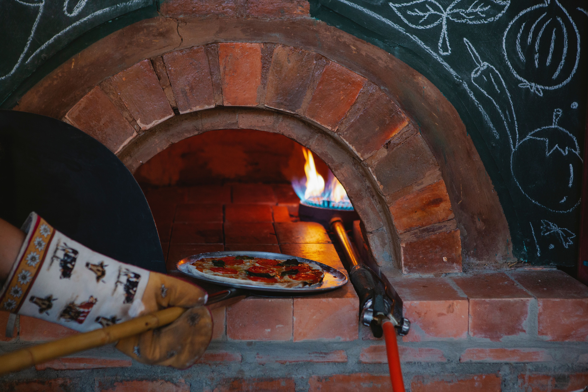

Poppy Pies
Neapolitan, Detroit, and New York style pizza takeout in Belhaven Town Center, from a wood-fired pop-up start.
Gallery

All gallery photos are stock photos, labeled as such. They show the kind of food described on this page, not this business.
About
Poppy Pies is a pizza takeout spot in Belhaven Town Center, started by owner Gray Welch as a mobile wood-fired pop-up. The shop serves Neapolitan, Detroit, and New York style pizzas, plus catering, markets, and festivals.
Menu
The Captain
A signature pizza at Poppy Pies.
Hot Popp
A signature pizza at Poppy Pies.
Poppyroni
A signature pizza at Poppy Pies.
Street Corn
A signature pizza at Poppy Pies.
Margherita
Margherita pizza.
Sassy Sausage
A signature pizza at Poppy Pies.
Burrata pizza
Pizza topped with burrata.
Cheese sticks
Cheese sticks from the menu.
Event catering
Catering for events, markets, and festivals.
Takeout, markets, and festivals
Poppy Pies is a takeout spot that also caters events and shows up at markets and festivals, a holdover from its start as a mobile wood-fired pop-up.
Visit
Address: 800 Manship St Ste 106, Jackson, MS 39202
Hours: Closed Monday. Tuesday 4-9pm, Wednesday-Sunday 11am-9pm.
Phone: +1 601-207-6779
Contact
Poppy Pies serves Jackson. Questions? Call +1 601-207-6779.